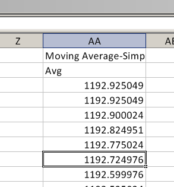
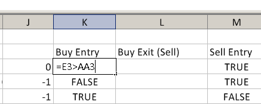
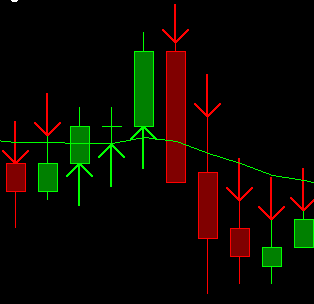

Spreadsheet Systems, Alerts and Automated Trading
Related Documentation
- Overview of Spreadsheet Studies
- Using the Spreadsheet Study
- Spreadsheet Systems, Alerts and Automated Trading
- Spreadsheet Study Inputs
- Referencing Other Charts in Spreadsheet Study Formulas
- Spreadsheet Studies Special Tasks
- Sharing Your Spreadsheet Study With Another User
- Working with Spreadsheets
- Spreadsheet Functions
- Spreadsheet Example Formulas and Usage
On This Page
- General Information
- Creating a System or Alert
- Scanning
- Creating a Trading System for Automated Trading (Applies to Spreadsheet System for Trading only)
- Going From Simulated Trading to Non-Simulated (Live) Trading
- Sound for Audible Alert and E-Mail Message Notifications
- Initiating Trades with Auto-Trading and Using Manual or Attached Orders Exits (Applies to Spreadsheet System for Trading only)
- Automated Advanced Exit Strategies (Applies to Spreadsheet System for Trading only)
- Spreadsheet Study Inputs that are Specific to Systems, Alerts, and Automated Trading
- Reset Condition On New Bar
- Allow Multiple Entries In Same Direction
- Alert/Signal Only Once per Bar
- Cancel All Orders on Entry and Reversals
- Cancel All Orders On Reversals
- Cancel All Orders On Entries
- Allow Entry With Working Orders
- Signal Only on Bar Close
- Maximum Position Allowed
- Send Orders To Trade Service
- Support Reversals
- Allow Opposite Entry with Opposing Position or Orders
- Cancel All Working Orders On Exit
- Column [K, L, M, N, O, P, Q, R, S, T, U, V-Z] Alert
- Use Chase Orders
- Strict Signal Only On Bar Close Evaluation
- Enhanced Auto Trade Signal Related Logging
- Copy J Column from Formula Source Sheet
- Minimum Chart Bars Required for Entry Exit Cell Evaluation
- Support Order Text Tag Cell
- BuyEntry (K), BuyExit (L), SellEntry (M), SellExit (N) Spreadsheet Order Action Columns (Applies to Spreadsheet System for Trading only)
- Ignored Signals With Spreadsheet Systems or Alerts
- Introduction
- Enabling Auto Trading
- Ignored Signals During Historical Data Downloading
- Buy/Sell Arrows Do Not Mean Trade Signals
- Reset Condition on New Bar
- Signal Only Once per Bar
- Signal Only on Bar Close
- Troubleshooting
- System/Alerts and Draw Style
- Nonzero Trade Position Quantity
- Delayed TRUE Result from Formulas
- Spreadsheet System for Trading Test Procedure
- Disappearing Arrows or Signals
- Special Spreadsheet Outputted Values
- Special Spreadsheet System for Trading Values
- Working Orders Quantity [J3]
- Position with Working Orders Quantity [J4]
- Position Quantity [J5 or J8]
- Position with Working Exit Orders Quantity [J6]
- Prior Position Quantity [J7]
- Position Average Price [J9]
- Open Profit/Loss [J10]
- Cumulative Closed Profit/Loss [J11]
- Maximum Open Position Profit [J31]
- Maximum Open Position Loss [J32]
- Win Trades [J33]
- Lose Trades [J34]
- Total Trades [J35]
- Seconds Per Bar - Intraday (read-only) [J36]
- Number of Trades Per Bar - Intraday (read-only) [J37]
- Volume Per Bar - Intraday (read-only) [J38]
- Range Per Bar (in ticks) - Intraday (read-only) [J39]
- Symbol [J40]
- Last Bar End DateTime [J41]
- Last Entry Trade Date-Time [J42]
- Last Exit Trade Date-Time [J43]
- Last Trade Profit/Loss [J44]
- Closed Daily Profit/Loss [J45]
- Trade Service Account Balance [J47]
- Last Entry Fill Price [J48]
- Last Exit Fill Price [J49]
- Daily Win Trades [J50]
- Daily Lose Trades [J51]
- Daily Total Trades [J52]
- Daily Total Quantity Filled [J53]
- Daily Number of Long Trades [J54]
- Daily Number of Short Trades [J55]
- Current Quote Values [Cells J12 through J20]
- Tick Size (Read-only) [J21]
- Special Spreadsheet System for Trading Values
- Special Spreadsheet Trading Inputs on the Spreadsheet (Applies to Spreadsheet System for Trading only)
- Limit or Stop Prices [J22, J23, J24, J25]
- Order Quantity [J26]
- Cancel Working Orders [J27]
- Disable Auto Trading [J28]
- Flatten Position and Cancel Working Orders [J29]
- Maximum Chase Amount for Limit Chase Orders [J46]
- Buy Entry: Order Type [J71]
- Buy Exit: Order Type [J72]
- Sell Entry: Order Type [J73]
- Sell Exit: Order Type [J74]
- Cancel All Orders except working Attached Orders [J78]
- Attached Order Target Offset (write only) [J80]
- Attached Order Stop Offset (write only) [J81]
- Use Separate Exit Order Quantity [J82]
- Exit Order Quantity [J83]
- Working Orders Exist (read-only) [J84]
- Allow Trading Only During Time Range (read/write) [J85]
- Start Time For Allowed Time Range (read/write) [J86]
- End Time For Allowed Time Range (read/write) [J87]
- Flatten Positions And Cancel Orders At Set Time (read/write) [J88]
- Time For Flatten Positions And Cancel Orders (read/write) [J89]
- Chart Number (read-only) [J91]
- Trade Account (read-only) [J92]
- Last Working Entry Order Date-Time (read-only) [J93]
- Last Working Entry Order Price (read-only) [J94]
- Last Working Exit Order Date-Time (read-only) [J95]
- Last Working Exit Order Price (read-only) [J96]
- Bar Period Type (read-only) [J97]
- Bar Parameter 1 (read-only) [J98]
- Bar Parameter 2 (read-only) [J99]
- Bar Parameter 3 (read-only) [J100]
- Bar Parameter 4 (read-only) [J101]
- Order Text Tag (write-only): [J102]
- All Symbols Daily Net Profit/Loss (read-only) [J103]
- All Symbols Cumulative Net Profit/Loss (read-only) [J104]
- All Symbols Cumulative Profit/Loss (read-only) [J105]
- Use Order Fill Calculated Position (read-only) [J106]
- Pause Chart Replay (write-only) [J111]
- Trade Window Configuration File (write-only) [J112]
- Back Testing (Applies to Spreadsheet System for Trading only)
- Spreadsheet Calculations and Spreadsheet Study Processing of Spreadsheet Data
- Multiple Exit Automated Trading Example (Applies to Spreadsheet System for Trading only)
- Limiting Trading to Certain Time Ranges
In recent versions of Sierra Chart we have renamed Workbook and Worksheet to Spreadsheet. The 3 Worksheet studies now have been renamed and begin with the name Spreadsheet. Worksheet Study has been renamed to Spreadsheet Study. This documentation uses the term Spreadsheet. In the version of Sierra Chart you are running, you may refer to the study names beginning with the old name Worksheet.
General Information
  {kind=link}
{kind=link}
{kind=link}
The Spreadsheet System/Alert study and the Spreadsheet System for Trading study can be used to create a Trading System or an Alert for your chart. A trading system or an alert means rules that you define which will provide buy or sell signals when the rules are true for a particular bar in the chart. These signals will be shown as graphical indications on the chart, show text alert lines and give audible alerts. In the case of the Spreadsheet System for Trading study, actual trade orders will also be given. An alert refers to the signal given when your System/Alert rules are true on the last bar. All of this is described in more detail below.
If you are just interested in getting an alert when your condition is true at the end of the chart and you do not need to see historical graphical indications on the chart of this, then in most cases you can just simply use the Simple Alert feature. And not bother using the more advanced Spreadsheet studies.
The difference between the Spreadsheet System for Trading study as compared to the Spreadsheet System/Alert study, is that the Spreadsheet System for Trading study has much more advanced logic for creating a trading system.
With with the Spreadsheet System for Trading study you can perform back testing and generate actual trade signals either which will be simulated or can be sent to your trading service. By default they will always be simulated. Even if you do not actually want to place Live orders with the Spreadsheet System for Trading study, and you just want to create a system and back test it, or just wish to place trades manually from it, you still will want to use the Spreadsheet System for Trading study rather than the Spreadsheet System/Alert study.
If you just simply want to create a simple System or advanced Alert to give you an indication when your rules return TRUE, then you will want to use the Spreadsheet System/Alert study.
Creating a System/Alert is accomplished by entering a Condition Formula in the formula columns on the Spreadsheet. This Condition Formula can access the price and study data (Study data is outputted beginning at column AA by default and depends on the Number of Formula Columns Input.).
This Condition Formula will be applied across the entire price graph. It will be continuously monitored and also can be scanned for (you should not do automated trading from a scan). This Condition Formula is used to give an indication of when a certain condition is TRUE for any chart column/bar. These indications are used to create a trading system or an alert.
There is no difference between the way Sierra Chart does Systems and Alerts. Both give graphical, text, and audible indications when your Condition Formula is TRUE. Although, a text message, audible sound, and a trade signal, in the case of the Spreadsheet System for Trading study, are only given when a Condition Formula returns TRUE on the very last column in the chart.
Also, when a Condition Formula is TRUE on the very last column in the chart, then an ! mark will be displayed in front of the study name and the study name will be highlighted in red. The alert message text and the audible alert sound are what constitute an alert indication.
In the case of the Spreadsheet System for Trading study, a trade signal and an alert are not necessarily given when your Condition Formula in one of the Buy/Sell Entry/Exit formula columns returns TRUE on the last column in the chart. There is other logic that is applied and other conditions have to be met. All of this is explained on this page.
Additionally, in the case of the Spreadsheet System for Trading study, if your Condition Formula returns TRUE on the last column in the chart, it will be ignored if data is being downloaded into the chart or when the chart is fully recalculated. These are safety methods to prevent trades from being given unintentionally, in the case when Sierra Chart is not in Trade Simulation Mode.
Sierra Chart provides a text alert for your Condition Formula when it becomes TRUE by adding a detailed message to the Alerts Log. To open the Alerts Log, select Window >> Alerts Manager >> Alerts Log on the menu. If the condition is TRUE at a chart column/bar other than the last chart column, then only a graphical indication is given.
Creating a System or Alert
This section applies to the Spreadsheet System/Alert study.
Follow the step-by-step Spreadsheet Study instructions.
When following those instructions and you get to the step to add the study to the chart, make sure you add the Spreadsheet System/Alert study instead.
When you get to the step where you enter a formula, enter your System/Alert Condition Formula instead. Refer to the Examples section below for example Spreadsheet System/Alert Condition Formulas.
In the case of the Spreadsheet System/Alert study, the formula results from the Spreadsheet will be displayed in the main price graph area (Chart Region 1) of the chart and drawn with Up/Down Arrow styles by default. The Draw Style can be changed through the Subgraphs settings on the Subgraphs tab of the Study Settings window for the Spreadsheet System/Alert study. For instructions, refer to Adding/Modifying studies.
The formulas on the Spreadsheet should return either a 1 (TRUE) or 0 (FALSE) value. A value of 1 or TRUE indicates the System/Alert formula condition has been met. For example: Enter =ID0.SG4@3 < 100 in row 3 of the K formula column to set up a Long Entry alert when the closing price is less than 100.
Long Entry Column
The K column is the Long Entry column. If a cell in this column is TRUE (1), then an Up Arrow (depends upon the Subgraph Draw Style) will be drawn on the chart at the low value of the corresponding bar to indicate a Long Entry for that bar.
Although any value other than 0 is considered a TRUE condition, the position of the Up Arrow is handled as a special case when the cell has a value of 1. Any other value will draw the Up Arrow at the value given in the cell. It is recommended to only use 0 and 1 for cells in this column.
Long Exit Column
The L column is the Long Exit column. If a cell in this column is TRUE (1), then a Left Arrow (depends upon the Subgraph Draw Style) will be drawn on the chart at the high value of the corresponding bar to indicate a Long Exit for that bar.
Although any value other than 0 is considered a TRUE condition, the position of the Left Arrow is handled as a special case when the cell has a value of 1. Any other value will draw the Left Arrow at the value given in the cell. It is recommended to only use 0 and 1 for cells in this column.
Short Entry Column
The M column is the Short Entry column . If a cell in this column is TRUE (1), then a Down Arrow (depends upon the Subgraph Draw Style) will be drawn on the chart at the high value of the corresponding bar to indicate a Short Entry.
Although any value other than 0 is considered a TRUE condition, the position of the Down Arrow is handled as a special case when the cell has a value of 1. Any other value will draw the Down Arrow at the value given in the cell. It is recommended to only use 0 and 1 for cells in this column.
Short Exit Column
The N column is the Short Exit column. If a cell in this column is TRUE (1), then an Right Arrow (depends upon the Subgraph Draw Style) will be drawn on the chart at the low value of the bar to indicate a Short Exit.
Although any value other than 0 is considered a TRUE condition, the position of the Right Arrow is handled as a special case when the cell has a value of 1. Any other value will draw the Right Arrow at the value given in the cell. It is recommended to only use 0 and 1 for cells in this column.
Other Columns
When graphing columns other than K, L, M, or N with a visible Draw Style, the return value of the Condition Formula must be within the range of values of the main price graph your study is overlaid on. Otherwise, the subgraph display will adversely affect the display of the chart.
There is no automatic translation from TRUE (1) or FALSE (0) to high and low bar values, from the formula columns O and higher.
An example formula that you can use for formula columns O and higher is =IF(ID0.SG4@3 > 100, C3, 0).
Changing Column Names
The above are the default System/Alert formula column names. You can rename the columns at row 2 in the Sheet and use them for any kind of condition. To rename a column, click two times on the cell with the name in row 2 and type a new name.
Controlling the Location of Arrows or Subgraph Values
You can also return values other than TRUE (1) or FALSE (0) in your System/Alert Condition Formulas. This can be done by using the IF function. For example: =IF([formula expression], D3, 0). This will return the low value of the chart bar. =IF([formula expression], C3 ,0). This will return the high value of the chart bar.
If the value returned by the formula is not TRUE (1) or FALSE (0), then the arrow will be drawn at the value the formula returns when using columns K, L, M, or N when using the Spreadsheet System/Alert study.
For formula columns O and higher, the Subgraph arrows or whatever the Subgraph Draw Style is, will always be drawn at the value returned from the formula.
Scanning
When you are using the Spreadsheet System/Alert study, you are able to scan for TRUE results from your System or Alert condition formulas among a list of symbols. For more information, refer to the Scan Menu commands documentation.
Creating a Trading System for Automated Trading
Halting Order Entry
Refer to Enabling and Disabling Automated Trading.
Steps To Create a Trading System for Automated Trading
- First make certain that auto trading is enabled. Make certain there is a checkmark by Trade >> Auto Trading Enabled - Global and Trade >> Auto Trading Enabled - Chart on the menu.
- Make sure there is a check mark by Trade >> Trade Simulation Mode On on the menu. This is so that orders will not be sent to your trading service. Instead all trades will be simulated.
Additionally, the Send Orders To Trade Service Input with the Spreadsheet System for Trading study must be set to No . This also prevents the orders from being sent to the connected Trading service. With these two settings, there are two layers of protection against sending actual orders.
For complete details, refer to SendOrdersToTradeService. - Go to an open chart or open a chart with File >> Find Symbol.
- Enable Trade >> Chart Trade Mode . Select Trade >> Attach Trade Window to Chart. When chart trading mode is activated on a chart, you will see the Orders and the Position from your automated trading system displayed on the chart. By attaching the Trade Window to the chart, you will have a complete trading control panel available to take any manual actions that you require and to set Attached Orders. More details can be found in the Chart Trading documentation.
- Select Analysis >> Studies on the menu.
- Select Spreadsheet System for Trading in the Studies Available list on the left. Do not confuse this study with the Spreadsheet Study or the Spreadsheet System/Alert studies.
- Press the Add button to add the Spreadsheet System for Trading study to the Studies to Graph list.
- For this example, also add the study named Moving Average-Simple. You do not need to change the settings for this study, the defaults are acceptable. We will create a system that will Buy when the current price moves above a moving average and Sell when the current price moves below a moving average. This is only intended as an example in these instructions. This is not necessarily a practical trading system for actual use.
If you want to make a system different than this example by using other studies, add them to the chart now if you have not already added them. Adjust the settings as you require them for each study. - Highlight the Spreadsheet System for Trading study in the Studies to Graph list box. Press the Settings button. In the Technical Study Settings window on the Settings And Inputs tab, there is a text box for the Spreadsheet Name (lower left). Enter a name in the text box without a file extension. This is the name of the Spreadsheet that will be opened or created to contain the data and formulas. The name should be related to what your custom system will do.
- To have the orders sent to the Sierra Chart internal Trade Simulation system, the Send Orders To Trade Service Input needs to be set to No. To send order signals to the connected Trading service, the Send Orders To Trade Service Input needs to be set to Yes and you also need to disable Trade >> Trade Simulation Mode On on the menu. For complete details, refer to SendOrdersToTradeService.
- In the study Inputs list, you will find an Input named Maximum Position Allowed . Set this Input as you require. It is the maximum Position in shares or contracts that is allowed. For complete details, refer to Maximum Position Allowed.
- The other inputs are correct as they are for this example. For more information about all of the inputs, refer to Inputs That Are Specific to Systems, Alerts, and Automated Trading.
- In the list of available study Inputs you will see inputs named Column K-Z Alert. Set these to the Alert Sound Number you want to hear when your System/Alert Condition Formula in the corresponding column becomes TRUE at the last bar. For more information, refer to Sound for Audible Alert and E-Mail Message Notifications.
- Press the OK button on the Technical Study Settings window.
- Press the OK button on the Chart Studies window.
- The Spreadsheet will be opened in the background. Go to it by selecting CW on the menu. The name of the spreadsheet will be listed and can be selected. The name will be what you have specified in the Study Settings window for the study.
-
A Spreadsheet contains multiple Sheets. The Sheet number the data is outputted to, is the same Sheet number as the chart number. For example, chart #2 will be outputted to Sheet2 in the Spreadsheet.
The Sheet can be selected with the list box at the top left of the Spreadsheet. All of the individual chart studies are also outputted to the same Sheet beginning at column AA (the default when using 16 formula columns). - Select the Sheet# from the list box at the top left of the Spreadsheet window that corresponds to the Chart Number that contains the Spreadsheet System for Trading study.
- Set cell J26 (Order Quantity) to the number of shares or contracts you want to trade when an order is submitted. If this order quantity cell is set to 0, then in the case of a Buy Entry or Sell Entry, it will be interpreted as a quantity of 1.
- All new orders use the settings of the Trade Window for the chart.
Go to the chart that contains the Spreadsheet System for Trading study. Select Trade >> Attach Trade Window to Chart to see what the settings are set to.
For example, if the Time in Force is set to Day, then all new orders submitted from the Spreadsheet will automatically have a Time in Force of Day.
The settings that you can set in the Trade Window also include Attached Orders. For complete instructions for Attached Orders, refer to the Attached Orders page. - On the attached Trade Window, set the Trade Account to the trading account that you want to use.
- The following steps provide an example of a trading system using Spreadsheet formulas. Buy Entry and Sell Entry formulas are given.
- To Buy when the Last price crosses from below the moving average, type in cell K3 (labeled: Buy Entry):
=CROSSFROMBELOW(ID0.SG4@3:ID0.SG4@4, ID2.SG1@3:ID2.SG1@4)
Where ID0.SG4@3:ID0.SG4@4 refers to the current and previous last trade prices of the chart bars and ID2.SG1@3:ID2.SG1@4 refers to the current and previous Moving Average - Simple study values which are located in column AA . In all places in the example formulas on this page, ID2 may need to be changed to the actual ID# number used by the Moving Average study. You can see the actual ID# number in row 1 in the column that the study is outputted to. Refer to the image below:
You can also optionally use: =AND(CROSSFROMBELOW(ID0.SG4@3:ID0.SG4@4, ID2.SG1@3:ID2.SG1@4), $J$8=0)
$J$8 is the current Trade Position quantity. This can be used to check the Position is flat before entering the market. The underlying automated trading logic checks this, but it can be checked in your formula to avoid unnecessary messages to the Trade >> Trade Service Log. The disadvantage is that you cannot see on the chart your historical buy and sell signal arrows without running a back test. - For an understanding of references like ID2.SG4@3, refer to References to Study Subgraph Columns when using the Spreadsheet Study.
- To Sell when the Last price crosses from above the moving average, type in cell M3 (labeled: Sell Entry):
=CROSSFROMABOVE(ID0.SG4@3:ID0.SG4@4, ID2.SG1@3:ID2.SG1@4)
Where ID0.SG4@3:ID0.SG4@4 refers to the current and previous last trade prices of the chart bars and ID2.SG1@3:ID2.SG1@4 refers to the current and previous Moving Average - Simple values which are located in column AA.
You can also optionally use: =AND(CROSSFROMBELOW( ID0.SG4@3:ID0.SG4@4, ID2.SG1@3:ID2.SG1@4), $J$8=0)
$J$8 is the current Trade Position quantity. This can be used to check the Position is flat before entering the market. The underlying automated trading logic checks this, but it can be checked in your formula to avoid unnecessary messages to the Trade >> Trade Service Log. The disadvantage is that you cannot see on the chart your historical buy and sell signal arrows without running a back test. - Using these formulas, when the Last price crosses from below the moving average, K3 (Buy Entry) will trigger a Buy order, and when the Last price crosses from above the moving average, M3 (Sell Entry) will trigger a Sell order.
By default, only one order can be sent until a corresponding Exit signal is given. Therefore, if there has already been a Buy Entry, then all other Buy Entry signals are ignored until the Buy Exit formula becomes TRUE and triggers a Sell or the Position is flattened by another method.
If there has already been a Sell Entry, then all other Sell Entry signals are ignored until the Sell Exit formula becomes TRUE and triggers a Buy or the Short Position is flattened by another method.
This behavior is controlled with the Allow Multiple Entries In Same Direction Input. If the Allow Opposite Entry with Opposing Position or Orders Input is set to Yes, which is the default, then if there currently is a Long Position, then a Sell Entry can exit that Position. The same with a Short Position and Buy Entry.
If you have multiple conditions for your trading system, then you will need to use the AND() function. For example, if you have a RSI (Relative Strength Index) study on the chart and the data is outputted to column AC on the Sheet, and you want to combine that with the Moving Average study, use a formula similar to this for the Buy Entry: =AND(CROSSFROMBELOW(ID0.SG4@3:ID0.SG4@4, ID2.SG1@3:ID2.SG1@4), ID3.SG1@3 < 40). ID3.SG1@3 references the RSI study assuming it has a study ID of 3.
For further information, refer to References to Study Subgraph Columns when using the Spreadsheet Study. - In this example we will create a Buy Exit (Sell) that exits a Position when a Stop or Target value is reached. A Buy Exit is optional. A Sell Entry could close out a Position created by a Buy Entry. Or, the Position can be closed out manually or with an Attached Order. In this example, we are using a Buy Exit formula to show you an exit strategy managed completely by the Spreadsheet System for Trading study.
In cell L3 (labeled: Buy Exit), type =OR(AND($J$8 > 0, ID0.SG4@$3 <= $J$9-1), AND($J$8 > 0, ID0.SG4@$3 >= $J$9+2)). ID0.SG4@$3 refers to the Last price of the most recent chart bar, $J$8 refers to the current Position Quantity, and $J$9 refers to the current Position Average Price.
When this formula in cell L3 returns TRUE, it will trigger a Sell order. What this formula means is that when there is a Long Position AND the last price is less than the price the Buy Entry was filled at minus 1 full point (Stop), OR there is a Long Position AND the last price is greater than the price the Buy Entry was filled at plus 2 full points (Limit), then return TRUE. This will cause a Sell order to be placed. This is just an example and you need to use what is appropriate in your specific case.
Note: It is essential that the formula contains a check that there is a Position > 0. This is explained in more detail in the Buy Exit section.
The $ means a cell reference refers to an absolute cell and the column and row will not be adjusted when the formula is automatically filled down. This formula is relevant only to the topmost row in the Spreadsheet (corresponds to the last bar in the chart), even though it is applied to historical bars as well. Refer to the Special Spreadsheet Outputted Values section for more information on the data in the J column.
When entering numbers and formulas, keep in mind to use the proper delimiters in the numbers and formulas, according to the Global Settings >> Spreadsheet Settings >> Decimal and Function Delimiters setting. For more information, refer to the Decimal and Function Delimiters section. - In this example we will create a Sell Exit (Buy) that exits a Position when a Stop or Target is reached. A Sell Exit is optional. A Buy Entry could close out a Position created by a Sell Entry. Or, the Position can be closed out manually or with an Attached Order. In this example, we are using a Sell Exit to show you an exit strategy managed completely by the Spreadsheet System for Trading study.
In cell N3 (labeled: Sell Exit), type =OR(AND($J$8 < 0, ID0.SG4@$3 >= $J$9+1), AND($J$8 < 0, ID0.SG4@$3 <= $J$9-2)). ID0.SG4@$3 refers to the Last price of the most recent chart bar, $J$8 refers to the Position Quantity, and $J$9 refers to the Position Average Price.
When this formula in cell N3 returns TRUE, it will send a Buy order. What this formula means is that when there is a short Position AND the last price is greater than the price the Sell Entry was filled at plus 1 full point (Stop), OR there is a short Position AND the last price is less than the price the Sell Entry was filled at minus 2 full points (Limit), then return TRUE. This will cause a Buy order to be placed. This is just an example and you need to use what is appropriate in your specific case.
Note: It is essential that the formula contains a check that there is a Position < 0. This is explained in more detail in the Sell Exit section.
The $ means a cell reference refers to an absolute cell and the column and row will not be adjusted when the formula is filled down. This formula is relevant only to the topmost row in the Spreadsheet (corresponds to the last bar in the chart), even though it is applied to historical bars as well. Refer to the Special Spreadsheet Outputted Values section for more information on the data in the J column. - Note: In the case of actual live trading, these Stops and Targets are sent by Sierra Chart to the connected trading service when the conditions are met. This is necessary in order to accomplish advanced exit strategies. Although these are not advanced exit strategies, we demonstrate how you can do advanced exit strategies.
- In order for an order to be placed as fast as possible, it is a good idea to make sure the Chart Update Interval, which is set through Global Settings >> General Settings on the menu, is set to 800 milliseconds or less. However, avoid making it very small unless your computer is very fast.
This setting can be changed for an individual chart instead of globally, refer to Chart Update Interval. - You can also use Attached Orders for exiting a Position. Refer to Initiating Trades with Auto-Trading and Using Manual or Attached Orders Exits.
- Now that we have entered the Spreadsheet formulas on the Spreadsheet, it is necessary to go back to the chart. Select CW on the menu and select the chart that you applied the Spreadsheet System for Trading study to, or select it from the chart window tabs which are located at either the top or bottom of the main window.
To ensure the formulas that have been entered are fully copied down the formula columns (K through Z) on the Spreadsheet, select Chart >> Recalculate on the menu.
Selecting this command is not necessary if Global Settings >> Spreadsheet Settings >> Recalculate the Chart when a Formula Column is Changed is enabled. - Refer to the Buy and Sell arrows on the chart. These arrows represent the TRUE values returned from the Buy Entry and Sell Entry Condition Formulas in the formula columns. By default the Subgraph Draw Style for the Exit columns (L and N) are set to Hidden, so they do not appear.
Understand that these do not represent actual submitted orders or order fills. There is an important difference. Refer to Buy/Sell Arrows Do Not Mean Trade Signals for more information. - In this example, we use exits which are based upon Trade Position data which is only known for the current Trade Position, so the Buy/Sell arrows are not relevant historically. If the exit formulas were based upon the price and/or study data, then you could set the corresponding Exit columns to a visible Draw Style.
- Make certain there is a check mark by Trade >> Auto Trading Enabled - Global and Trade >> Auto Trading Enabled - Chart so the TRUE results that your Condition Formulas provide, will be able to submit Trade Orders and not be ignored.
- As the chart is updated, either with real-time streaming data received from the connected data feed, or during a chart replay, the Buy Entry, Buy Exit, Sell Entry, Sell Exit formulas at row 3 when they become TRUE/1 will cause Trade Orders to be submitted, either in Trade Simulation Mode or to the connected Trading service.
These signals also produce Alert Messages and these can be viewed by selecting Window >> Alerts Manager >> Alerts Log on the menu. - There are various conditions which can cause the TRUE/1 formula results to become ignored and not result in Trade Orders from being submitted. For complete details, refer to Ignored Signals With Spreadsheet Systems or Alerts. This is an essential section to read over.
- It is important to understand that Buy/Sell Arrows Do Not Mean Trade Signals
- To view the submitted Trade Orders, select Trade >> Trade Activity Log >> Trade Activity on the menu. For detailed documentation, refer to Viewing Historical Trade Activity Log.
- To view the Trade Service Log, select Trade >> Trade Service Log on the menu. The Trade Service Log displays ignored signals from your Condition Formulas.
- The next step is to simply watch your system perform in real-time as your chart is updated. Or perform Back Testing. Back Testing is a very good way to test your trading system on historical data and get a good understanding of it.
There is no other way to test the trading system on historical chart data other than through Back Testing or a chart replay. The buy and sell arrows you see on the chart do not actually represent submitted Trade Orders. Order Actions will only happen through a Back Test, during a chart replay or during real-time updating of the chart. - To go from simulated trading to non-simulated (Live) trading, follow the instructions in Going From Simulated Trading to Non-Simulated (Live) Trading.
{kind=link}
Going From Simulated Trading to Non-Simulated (Live) Trading
If and when you are ready to have your trading system submit real orders, you will need to go to non-simulated mode by making sure there is no check mark by Trade >> Trade Simulation Mode On.
Next, go to the Study Settings for the Spreadsheet System for Trading study on your chart and set the Send Orders To Trade Service Input to Yes.
For complete details, refer to SendOrdersToTradeService.
At this time any trading signals given will be sent as orders to your Trading service, assuming you are connected to a valid Trading service and you are connected to the Data and Trade server (File >> Connect to Data Feed).
Keep in mind that if you are using a simulated account with your Trading service, then even though you are not in Sierra Chart Trade Simulation Mode and Send Orders To Trade Service is set to Yes, the orders will still be simulated.
Sound for Audible Alert and E-Mail Message Notifications
You can specify an alert sound to be played when the System or Alert condition in cells K3 through Z3 become TRUE. For the formulas in the Sheet to trigger sound alerts requires enabling them.
Go to the Study Settings window for your Spreadsheet Study. For instructions, refer to Modifying Studies. Keep in mind, that after a Spreadsheet Study is applied to a chart it changes its name in the Studies to Graph list on the Chart Studies window to the name of the Spreadsheet file it references.
On the Settings and Inputs tab of the Study Settings window you will see a list of all of the available study Inputs. You will see several inputs named Column K,L,M,N,O,P,Q,R,S,T,U,V-Z Alert that will let you select the Alert Sound Number to be used for each column.
Select the Alert Sound Number that you want to use, or select No Alert to not play an alert sound when a formula becomes TRUE in cells K3 through Z3. Sheet columns W through Z use the same alert sound number as column V.
To set the sound file that plays for each alert number, select Global Settings >> General Settings on the menu. You can also setup an email message to be sent when an alert sound is triggered.
If the Draw Style for a Sheet column is set to Ignore, then no System or Alert signals can be triggered by the Sheet formulas. However, this does not apply to column K through N when using the Spreadsheet System for Trading study. With that study, Trade signals can always be triggered by the Sheet formulas regardless of the Draw Style setting.
Initiating Trades with Auto-Trading and Using Manual or Attached Orders Exits
It is not necessary to use the Buy Exit or Sell Exit Order Action formula cells in the Spreadsheet System for Trading study to exit a current Position. Exits can be done by manually entering an order through the Trade Window, through Chart Trading, or can be performed by using the Attached Orders feature (Targets and Stops).
In any of these cases, you can then optionally leave the Buy Exit or Sell Exit Order Action formula cells blank.
Target and Stop orders are configured through the Trade Window on the Targets tab. For complete documentation, refer to the Attached Orders page.
When using Attached Orders, make sure that Use Attached Orders is enabled on the Trade Window for the chart containing the Spreadsheet System for Trading study. Refer to Opening Trade Window for Chart to open the Trade Window.
The set of Attached Orders which is entered on the Trade Window for a chart is saved when a Chartbook is saved.
It is fully supported to adjust both the Target Order offset and Stop Order offset through Sheet cells when using a single Target and Stop Attached Orders on the Trade Window. Refer to Attached Order Target Offset and Attached Order Stop Offset.
Orders that are given by the Buy Exit or Sell Exit Order Action formula cells will not use the Attached Orders configured in the Trade Window. Only Buy Entry and Sell Entry will use them when Use Attached Orders is enabled on the Trade Window.
When you are using the automated trading functionality in Sierra Chart, it is recommended that you always enter and cancel any manual orders from within Sierra Chart to avoid any unexpected auto trade issues due to Sierra Chart not being aware of the Orders and Trade Position changes you do from other trading programs.
For additional information about using Attached Orders with an automated trading system, refer to SupportAttachedOrdersForTrading.
It is possible to define a set of Attached Orders to use with your Spreadsheet System for Trading study and also use the Buy/Sell Exit columns at the same time. For this to work properly, you need to set Cancel All Working Orders On Exit Input to Yes. For more information about setting the Order Quantity for the Spreadsheet System for Trading study, refer to Cell J26 (Order Quantity).Using Both Attached Orders and Buy Exit and Sell Exit at the Same Time
Trade Window Order Quantity with Attached Orders
Automated Advanced Exit Strategies
You may want to enter a Position manually and then have an automated Position exit based upon certain technical conditions which can be based upon the price and study data. This is accomplished by using the Spreadsheet System for Trading study. Refer to the Creating a Trading System for Automated Trading instructions on this page to use this study and define your exit conditions. The study will need to be applied to a chart of the same symbol that you are trading.
When you use the Spreadsheet System for Trading study for this purpose, you will not use the Buy Entry and Sell Entry Order Action columns. These columns need to be left blank. Any steps in the instructions associated with them can be skipped. You will only use the Buy Exit and Sell Exit Order Action columns.
Spreadsheet System for Trading study Inputs related to Buy Entry and Sell Entry will not apply for your automated exit strategy.
When either the Buy Exit or Sell Exit Order Action columns become TRUE, an order will be submitted at that time. This can be any of the order types supported by the Spreadsheet System for Trading study. Only when your Exit condition is met, will the order be submitted, not before. Therefore, it is not possible to submit a Stop or Limit order ahead of time and modify it. Therefore, Sierra Chart needs to be running to monitor your current Position and submit the orders. It is possible to use the ACSIL Trading functions and modify an order that has been submitted.
Spreadsheet Study Inputs that are Specific to Systems, Alerts, and Automated Trading
This section lists Inputs for the Spreadsheet Studies which are specific to the Spreadsheet System for Trading and the Spreadsheet System/Alert studies. These inputs can only be set through the Study Settings window for the Spreadsheet studies.
For the other available Spreadsheet Study Inputs which are set through the Study Settings window, refer to the Spreadsheet Study Inputs page.
A Read-only display of some of these Study Inputs is displayed on the Spreadsheet Sheet that the chart data is outputted to in cell columns I and J. It is not possible to modify the value of these Inputs through the Sheet cells. They can only be set through the Study Settings window for the Spreadsheet study.
Reset Condition On New Bar
If this option is set to Yes, then a System or Alert signal will be given when a new bar is added to the chart and the System/Alert condition is TRUE at row 3 even though the System/Alert condition was previously TRUE on the prior bar/row.
Normally, when a formula returns TRUE or a nonzero value in one of the Spreadsheet columns used for Systems or Alerts and a new bar is added, a new signal will not be given even if it still TRUE. It will have to go back to FALSE and then back to TRUE again, unless Reset Condition On New Bar is set to Yes.
Setting Reset Condition On New Bar to Yes does not in any way change the values returned from the formulas in the Buy/Sell Entry and Exit columns. It only affects the interpretation of the TRUE values returned.
Allow Multiple Entries In Same Direction
This Input applies only to the Spreadsheet System for Trading study.
Refer to the description on the Auto Trade Management page.
Alert/Signal Only Once per Bar
If the Alert/Signal Only Once Per Bar option is set to Yes, then an alert or trading signal will be given only once per Formula Column per bar in the chart.
When an alert or trading is given once for a specific Spreadsheet Formula Column, then another will not be given until there is a new bar in the chart and the System/Alert Condition Formula goes back to FALSE and then to TRUE.
This applies to each formula column independently. For example, in the case of the Spreadsheet System for Trading study, if there is a Buy Entry at a particular bar, there can still be a Buy Exit given at the same bar. However, there cannot be 2 Buy Entries on the same bar when this option is enabled.
It is recommended that if you have any trouble obtaining a trading signal when you normally would expect one, that you try setting this option to No.
In the case of the Spreadsheet System for Trading study, when a signal is ignored because of this option, that ignored signal will be logged in the Trade >> Trade Service Log. This is very helpful for troubleshooting purposes. The message is: Signal ignored because 'Signal Only Once Per Bar' is enabled and a signal was already given from formula column for bar.
Cancel All Orders on Entry and Reversals
Refer to the description on the Auto Trade Management page.
Cancel All Orders On Reversals
Refer to the description on the Auto Trade Management page.
Cancel All Orders On Entries
Refer to the description on the Auto Trade Management page.
Allow Entry With Working Orders
Refer to the description on the Auto Trade Management page.
Signal Only on Bar Close
The Signal Only on Bar Close Inputs are specific to the Spreadsheet System for Trading study and the Spreadsheet System/Alert study. There are two versions of this Input, one for Sheet columns K and M and the other for columns L, N-Z.
When this Input is set to Yes, Sheet formulas that return a non-zero (TRUE) value at row 3 in the corresponding formula columns are ignored until the last bar closes. The way this is accomplished is row 4 is monitored instead of row 3.
When this Input is set to Yes, then anywhere in the documentation row 3 is mentioned, it is row 4 instead. In the same way that row 3 is continuously monitored for TRUE results from formulas in the corresponding formula columns, row 4 will be continuously monitored when this Input is set to Yes.
You may want to set Strict Signal Only On Bar Close Evaluation to Yes, when you set one of these inputs to Yes.
There is one scenario that you should keep in mind about when using Signal Only on Bar Close. Consider you have a formula and one of the Sheet formula columns and it returns TRUE at row 3 (the last bar of the chart) in the column. You refer to the arrow on the chart. A new bar is added, the bar therefore is considered closed, the formula moves down to row 4, it is no longer TRUE and the arrow disappears.
In this case when you are using Signal Only on Bar Close, you will not get a signal.
Signal Only on Bar Close is completely separate from and does not conflict in any way with the Evaluate on Bar Close Alert Option. Evaluate on Bar Close is ignored by the Spreadsheet System/Alert and the Spreadsheet System for Trading studies.
Maximum Position Allowed
This Input applies only to the Spreadsheet System for Trading study.
Refer to the description on the Auto Trade Management page.
Send Orders To Trade Service
Refer to the description on the Auto Trade Management page.
This Input applies only to the specific instance of the Spreadsheet System for Trading that it is set on. It has no effect on manually entered orders on the chart.
It also only applies to the specific Spreadsheet being used by the Spreadsheet System for Trading study.
Support Reversals
Refer to the description on the Auto Trade Management page.
Allow Opposite Entry with Opposing Position or Orders
This Input applies only to the Spreadsheet System for Trading study.
Refer to the description on the Auto Trade Management page.
Cancel All Working Orders On Exit
This Input applies only to the Spreadsheet System for Trading study.
Refer to the description on the Auto Trade Management page.
Column [K, L, M, N, O, P, Q, R, S, T, U, V-Z] Alert
These Inputs only apply to the Spreadsheet System/Alert and the Spreadsheet System for Trading studies.
These Inputs set the Alert Number for a specific Sheet column. Alert Numbers are supported up to the first 16 formula columns K through Z.
The Alert Number is specified for each individual Sheet column independently. Although for columns V through Z, they share the same Alert Number. You can select among 150 different Alert Numbers.
These Alert Numbers can then be configured to play specific sound files, and/or send email messages. Refer to Alert Sound Settings in the General Settings documentation.
The possible choices are:
- Alert Disabled: The setting means that the Alert functionality for the Sheet formula column is completely disabled and there will be no alert sound, no email alert message, and no message added to the Window >> Alerts Manager >> Alerts Log.
- No Alert Sound: This setting means that an alert sound will not be played and an alert email message will not be sent, but there will still be a message added to the Window >> Alerts Manager >> Alerts Log when the formula at row 3 in the formula column becomes TRUE.
- Alert 1-150: This setting means that an alert sound will be played, an alert email message can be sent and there will be a message added to the Window >> Alerts Manager >> Alerts Log when the formula at row 3 in the formula column becomes TRUE.
Note: The Alert Number setting in the Simple Alert settings in the Study Settings window is not relevant when using the Spreadsheet System/Alert and the Spreadsheet System for Trading studies.
If the Alert Sound does not play when expected, then refer to the Troubleshooting for Alert Sounds That Do Not Play section about this.
Use Chase Orders
This Input only applies to the Spreadsheet System for Trading study. When this Input is set to Yes and you have enabled limit orders for a particular Buy/Sell column, then the limit order will be submitted as a Limit Chase Order. The chase amount is set through the J46 cell labelled Maximum Chase Amount for Limit Chase Orders.
Strict Signal Only On Bar Close Evaluation
The Strict Signal Only On Bar Close Evaluation Input applies a stricter method of evaluation when you have either of the Signal Only on Bar Close Inputs set to Yes.
When this Input is set to Yes, then only at the moment when a bar closes when one or more new bars are added to the chart, will an evaluation of your Spreadsheet formulas from the corresponding Spreadsheet columns (K, M, L, N-Z) be evaluated for TRUE conditions.
When this Input is set to Yes, row 4 will not be continuously monitored as usual, only exactly at the moment when a bar closes and the chart is updated.
Enhanced Auto Trade Signal Related Logging
When the Enhanced Auto Trade Signal Related Logging Input is set to Yes, this will add additional messages to the Trade >> Trade Service Log indicating the reason why an order signal is ignored from formula columns K, L, M, N at rows 3 and 4 when using the Spreadsheet System for Trading study.
This is helpful to troubleshoot problems with ignored signals. This should provide a definitive indication as to why signal is getting ignored.
Set this Input to Yes only for a short period of time and only when necessary because it generates a large amount of messages and can create a very heavy and unnecessary CPU load when doing back testing to the point where a tick by tick back test becomes next to impossible to complete and extremely burdensome.
Copy J Column from Formula Source Sheet
When this Input is set to Yes, then this will cause the following rows from column J from the Formula Source Sheet to be copied to the Sheet used by the Spreadsheet System for Trading study.
This includes the cells that support writing or entry by the user. If they are read-only, they are not copied from the Formula Source Sheet.
- Limit or Stop Price - Buy Entry (K)
- Limit or Stop Price - Buy Exit (L)
- Limit or Stop Price - Sell Entry (M)
- Limit or Stop Price - Sell Exit (N)
- Order Quantity
- Cancel Working Orders
- Disable Auto Trading
- Flatten and Cancel Working Orders
- Maximum Chase Amount for Limit Chase Orders
- Buy Entry: Order Type. M=Market,L=Limit,S=Stop,SL=Stop-Limit,MIT=MarketIfTouched
- Buy Exit: Order Type. M=Market,L=Limit,S=Stop,SL=Stop-Limit,MIT=MarketIfTouched
- Sell Entry: Order Type. M=Market,L=Limit,S=Stop,SL=Stop-Limit,MIT=MarketIfTouched
- Sell Exit: Order Type. M=Market,L=Limit,S=Stop,SL=Stop-Limit,MIT=MarketIfTouched
- Cancel All Orders except working Attached Orders
- Attached Order Target Offset
- Attached Order Stop Offset
- Use Separate Exit Order Quantity
- Exit Order Quantity
- Allow Trading Only During Time Range
- Start Time For Allowed Time Range
- End Time For Allowed Time Range
- Flatten Positions And Cancel Orders At Set Time
- Time for Flatten Positions and Cancel Orders
- Trade Window Configuration File
Minimum Chart Bars Required for Entry Exit Cell Evaluation
This Input when set to Yes, will prevent evaluating the Buy/Sell Entry/Exit cells for order signals until the specified number of bars is in the chart.
Support Order Text Tag Cell
When this Spreadsheet System for Trading study Input is set to Yes, then the Order Text Tag cell in the I/J columns will set the Text Tag on the Trade Window associated with the chart the Spreadsheet System for Trading study is on. That cell can contain a formula to programmatically display any text that you want.
This feature is useful to add additional text with an order that is displayed in the Trade Activity Log.
BuyEntry (K), BuyExit (L), SellEntry (M), SellExit (N) Spreadsheet Order Action Columns
The following Spreadsheet Order Action Columns only apply to the Spreadsheet System for Trading study.
Note: For all of the below Order Actions: When an order is submitted, an Alert Sound will also be played if you selected an Alert Sound for the corresponding Spreadsheet column in the Input Settings on the Study Settings window.
An Alert Message will also be added to the Window >> Alerts Manager >> Alerts Log.
Buy Entry (column K)
When the Condition Formula in row 3 of column K on the Spreadsheet returns a nonzero value or TRUE, then a Buy order will be given if certain conditions are met. For complete details about these conditions, refer to the Auto Trade Management page.
The actual order is not submitted until the cell becomes nonzero or TRUE assuming the conditions for sending the order have been met.
Buy Exit (column L)
When the Condition Formula in row 3 of column L on the Spreadsheet returns a nonzero value or TRUE, then a Sell order will be given if certain conditions are met. For complete details about these conditions, refer to the Auto Trade Management page.
You need to code into your Exit formulas by using the AND() Spreadsheet function, a check that there is a Trade Position Quantity. An example would be: =OR(AND($J$8 > 0, ID0.SG4@$3 <= $J$9-1), AND($J$8 > 0, ID0.SG4@$3 >= $J$9+2)).
The reference to cell J8 refers to the current Trade Position Quantity. The dollar signs in $J$8 mean it is an absolute Spreadsheet reference.
In the case of a Buy Exit formula, you must to check to make certain there is a long Trade Position by making certain that J8 is > 0. The purpose of this is so that the formula remains FALSE until such time that a Trade Position can be exited.
Otherwise, the formula could become TRUE on a bar and give a signal even before there is a Trade Position. In this case it will be ignored as it should be. However, if it remains TRUE and then later on that very same bar or a different bar, when there finally is a Trade Position, there will no longer be an Exit signal because the prior TRUE state was already ignored and the formula remains TRUE and not giving a new signal.
The actual order is not submitted until the cell becomes nonzero or TRUE assuming the conditions for sending the order have been met.
Sell Entry (column M)
When the Condition Formula in row 3 of column M on the Spreadsheet returns a nonzero value or TRUE, then a Sell order will be given if certain conditions are met. For complete details about these conditions, refer to the Auto Trade Management page.
The actual order is not submitted until the cell becomes nonzero or TRUE assuming the conditions for sending the order have been met.
Sell Exit (column N)
When the Condition Formula in row 3 of column N on the Spreadsheet returns a nonzero value or TRUE, then a Buy order will be given if certain conditions are met. For complete details about these conditions, refer to the Auto Trade Management page.
You need to code into your Exit formulas by using the AND() Spreadsheet function, a check that there is a Trade Position Quantity. An example would be: =OR(AND($J$8 < 0, ID0.SG4@$3 >= $J$9+1), AND($J$8 < 0, ID0.SG4@$3 <= $J$9-2)).
The reference to cell J8 refers to the current Trade Position Quantity. The dollar signs in $J$8 mean it is an absolute Spreadsheet reference.
In the case of a Sell Exit formula, you must to check to make certain there is a short Trade Position by making certain that J8 is < 0. The purpose of this is so that the formula remains FALSE until such time that a Trade Position can be exited.
Otherwise, the formula could become TRUE on a bar and give a signal even before there is a Trade Position. In this case it will be ignored as it should be. However, if it remains TRUE and then later on that very same bar or a different bar, when there finally is a Trade Position, there will no longer be an Exit signal because the prior TRUE state was already ignored and the formula remains TRUE and not giving a new signal.
The actual order is not submitted until the cell becomes nonzero or TRUE assuming the conditions for sending the order have been met.
Ignored Signals With Spreadsheet Systems or Alerts
Introduction
There are many cases in which a Buy or Sell signal from the Entry and Exit formula columns (K, L, M, N) will be ignored. When a signal is ignored from a formula that returns a nonzero number or TRUE, then there will be no Alert Sound played, Alert Message logged, or a Trade Order sent. This section explains all of this.
Enabling Auto Trading
If Trade >> Auto Trading Enabled - Global or Trade >> Auto Trading Enabled - Chart are unchecked, then Buy and Sell trade order signals from the Spreadsheet System for Trading study will be ignored. In this case you will see messages added to the Trade >> Trade Service Log indicating this.
The Send Orders to Trade Service study Input setting needs to be set consistently with the Trade >> Trade Simulation Mode On setting on the menu. If it is not, then Buy and Sell trade order signals from the Spreadsheet System for Trading study will be ignored. In this case you will see messages added to the Trade >> Trade Service Log indicating this. For complete details, refer to SendOrdersToTradeService.
Ignored Signals During Historical Data Downloading
With the Spreadsheet System for Trading study and the Spreadsheet System/Alert study, System and Alert signals from the Sheet formula columns are ignored on historical data and when historical data is being downloaded. They are monitored for when the chart is actually updating with new data.
A chart will be updating with new data during real-time chart updating with live data, during replays, or during a Back Test. If you want to see the Back Test results from historical Buy and Sell signals from the Buy/Sell formula columns in the case of when using the Spreadsheet System for Trading study, then refer to the Back Testing section.
Buy/Sell Arrows Do Not Mean Trade Signals
When using the Spreadsheet System for Trading study and a formula returns TRUE/1 in the Buy Entry (K3), Buy Exit (L3), Sell Entry (M3), or Sell Exit (N3) cells, a trade signal is not necessarily going to be given.
You will see an arrow above or below the chart bar corresponding to the particular formula column cell indicating a buy or sell signal based upon that TRUE/1 value, assuming the corresponding Subgraph Draw Style is set to a visible style. For example, if cell K5 is 1 in the Sheet being used by the Spreadsheet Study and the Buy Entry Subgraph >> Draw Style is set to Arrow Up, then you would see an up arrow displayed below the third chart bar from the last bar in the chart.
However, this does not necessarily mean that the formula TRUE/1 result will be followed and a trade signal will be given. The BuyEntry (K), BuyExit (L), SellEntry (M), SellExit (N) Spreadsheet Order Action Columns rules must be met and the additional conditions imposed by the related study Input Settings must be met, for a trade signal to be actually given. If the trade signal is ignored, then a message will be added to the Trade >> Trade Service Log indicating the reason why.
Review the Trade Service Log for the reason. To see on the chart the actual order fills from trades made, you need to display the order fills. For instructions to do this, refer to Displaying Order Fills.
Reset Condition on New Bar
When using either the Spreadsheet System for Trading or Spreadsheet System/Alert studies, the TRUE signals given from cells K3 through Z3 may not always be followed and give an alert or trade signal, even though they still return TRUE or a non zero value and an arrow shows on the chart. If a cell is TRUE and there is a new bar added to the chart and the cell continues to be TRUE, because the state is already TRUE, you will not get a new signal unless the Input Reset Condition on New Bar is set to Yes.
Signal Only Once per Bar
If a TRUE signal has been given by the formula in a particular cell and then it goes back to FALSE and back to TRUE on the same bar, you will not get a signal if the study Input Signal Only Once Per Bar is set to Yes.
One scenario to be aware of, is that a Buy/Sell Exit signal is given when there is not currently an existing Trade Position, and then there is an Entry on the same bar and then a Buy/Sell Exit on that same bar again. In the case of when Signal Only Once Per Bar is set to Yes, that second Buy/Sell Exit is going to get ignored. The solution to this is to check for a nonzero Position Quantity in the Buy/Sell Exit formula.
Signal Only on Bar Close
If you have the Signal Only On Bar Close (Column K,M) Input set to Yes, then a TRUE signal will be ignored on cells K3 and M3, and only the cells K4 and M4 will be monitored for signals. Likewise with the Signal Only On Bar Close (Column L,N-Z) Input.
In the case of when either Signal Only Once per Bar and Signal Only on Bar Close study Inputs have been set to Yes, when a signal is ignored by these restrictions, there is no message added to the Trade Service Log or the Alerts Log, except in the case of the Spreadsheet System for Trading study when the signal has been ignored as the result of Signal Only Once Per Bar being set to Yes.
Troubleshooting
In order to troubleshoot a problem with ignored signals, we recommend setting both of the Signal Only On Bar Close Inputs to No.
Detailed logging can also be enabled which will add reasons for ignored signals in all cases, to the Trade >> Trade Service Log.
When using the Spreadsheet System for Trading study, set the Enhanced Auto Trade Signal Related Logging Input to Yes.
When using the Spreadsheet System/Alert study, set the Enhanced System Signal Related Logging Input to Yes.
Only set these Inputs to Yes when absolutely necessary because they will add a very large number of messages to the Trade Service Log and can cause Sierra Chart to be nonresponsive at times.
System/Alerts and Draw Style
In the case of the Spreadsheet System/Alert study, if the Draw Style for a Spreadsheet column is set to Ignore, then System or Alert signals in that column will be ignored.
Nonzero Trade Position Quantity
In the case of the Buy Exit or Sell Exit Order Action columns when using the Spreadsheet System for Trading study, if a Buy/Sell Exit formula is TRUE and remains TRUE before there is a nonzero Trade Position Quantity and then a nonzero Trade Position Quantity later exists, then the Exit will be ignored it until it goes back to FALSE and then to TRUE.
Therefore, you need to program the formula to remain FALSE until there is a Trade Position Quantity. This can be done by using the AND function and checking that cell J5 is nonzero.
Delayed TRUE Result from Formulas
Another thing to also consider is that you may see an arrow on the chart from one of the Order Action formula column cells indicating TRUE, but it is on the bar prior to the last bar in the chart and it appeared after a new bar was added to the chart. Therefore, unless the corresponding Signal Only On Bar Close Input is set to Yes, then that TRUE result going to be ignored as well.
You cannot make an assumption that when you see a 1/TRUE in a cell, that at the moment the cell is evaluated for an order/alert signal that the 1/TRUE was present at that time. It may have been 0 and could have went to 1 quickly after.
Spreadsheet System for Trading Test Procedure
To get an understanding of how the TRUE signals in K3, L3, M3, N3 are processed follow the test procedures on the Spreadsheet System for Trading Test Procedure page.
After you go through this test procedure, and you are still having difficulty troubleshooting your Spreadsheet System for Trading study implementation, we recommend changing the formulas to simple TRUE/1 values temporarily during a replay just like explained in the test procedure, and then gradually add to the complexity of them until you can determine the source of the problem.
Disappearing Arrows or Signals
When using either the Spreadsheet System for Trading study or the Spreadsheet System/Alert study, when a formula in a cell in one of the Spreadsheet columns that is graphed on the chart, typically this is going to be Spreadsheet columns K, L, M, N, returns a nonzero or TRUE value, you will see an arrow on the corresponding bar on the chart representing the TRUE condition.
You also need to make certain that the Draw Style for the particular Spreadsheet formula column you want to see arrows for, is set to one of the Arrow Up/Down/Left/Right Draw Styles or other similar style.
These TRUE formula signals can trigger an Alert Sound as well and also a Trade signal (in the case of the Spreadsheet System for Trading study) if these signals are given in row 3, or row 4 if have set the study Input Signal Only On Bar Close (Columns K,M)/(Columns L,N-Z) to Yes.
If the formula no longer is returning a nonzero or TRUE value and instead returning FALSE (0), then the arrow will disappear even though the Alert and the Trade signal was previously given.
So it is important to understand that your formula could go to TRUE momentarily and then FALSE.
In summary, the standard Up and Down arrows on a chart displayed by these Spreadsheet studies and the result of formulas in cells K3, L3, M3, N3 (or at row 4), indicate the present state of the formulas. During the formation of a bar or after new bars are added to the chart, a formula could go from TRUE (1) to FALSE (0) based upon the logic of the formula and changing data in the cells that it references. It is up to you to determine specifically what is happening and why.
To actually see where the trades were made, you need to display Order Fills on the chart. You can also refer to the Trade Activity Log.
If you are using the Spreadsheet System for Trading study and you wish to visibly see where trades have been made on the chart in the case of when the arrows on the chart disappear, then enable Trade >> Show Order Fills. Various options affecting the display of order fills can be set by enabling Trade >> Chart Trade Settings on the menu.
When a cell that can trigger an Alert Sound or Trade signal becomes TRUE and an Alert Sound and/or a Trade signal is actually given, then an alert message will be added to the Window >> Show/Hide Alerts Manager >> Alerts Log. All of these events are logged in the Alerts Log tab.
Not only can you experience the condition where the arrows disappear, you could also have the condition where the state of your formulas change, based upon how they are programmed and the data they are referencing, and you see an arrow later appear on a bar where a signal was not previously given when it was evaluated for an alert or trade signal.
You may also see that the arrow direction does not correspond to an order fill displayed on a bar due to changes with the formula results during processing of a bar. For example, initially a bar may have given a Buy signal, a Buy fill is displayed on the chart for the bar, but then later the bar gives a Sell signal which is ignored based upon the auto trade logic. So at the present moment you see a Down Arrow, but a Buy fill for the bar.
In order to create more stability when it comes to generating orders when using the Spreadsheet System for Trading study, you may want to set the Signal Only On Bar Close (Columns K,M) / (Columns L,N-Z) Input to Yes.
All of what is described in this section is something that you need to be aware of when you are looking at the final results of your trading system and comparing them to the current FALSE/TRUE state of the Spreadsheet formulas that you visually see at the present moment.
The Effect of the Number of Rows Input
The Number of Rows Input with the Spreadsheet studies, affects the standard Up and Down arrows displayed on a chart by the Spreadsheet studies. You will need to increase this Input value to see arrows going back more bars. Arrows that were placed on bars further back than the Number of Rows Input during real-time updating and chart replays, can disappear, or if they have not been removed because there has not been a full recalculation of the study, they may no longer be valid.
Special Spreadsheet Outputted Values
The Spreadsheet studies will output additional values in the I and J Spreadsheet columns for information and calculation purposes. This is in addition to the main price graph data outputted to columns A through G and the study data outputted beginning at column AA.
The following is a list of all the additional values that are outputted.
Special Spreadsheet System for Trading Values
These values are outputted for the Spreadsheet System for Trading study only. These values can be used in Spreadsheet formulas. Below is a description of what each Row means.
Working Orders Quantity [J3]
This is the combined quantity for all the Working orders for the chart symbol. This is positive for Buy orders and negative for Sell orders. If there is one Buy working order with a quantity of 5, it will be +5. If there is one Buy order and one Sell order, each with the same quantity, it will be 0.
This cell is updated at every calculation.
Position with Working Orders Quantity [J4]
This is the Position quantity combined with the quantities from Working orders. BuyEntry and SellEntry depend on this number to determine whether or not another entry should be allowed. For more information, refer to Trade Positions.
This cell is updated at every calculation.
Position Quantity [J5 or J8]
Cells J5 and J8 contain the Quantity of the current Trade Position for the chart symbol.
This Quantity can either be a quantity from the Trade Simulation Mode system or the quantity from the external trading service.
This depends upon whether the Spreadsheet System for Trading study is in Simulation Mode or not. For instructions to control this, refer to Going From Simulated Trading to Non-Simulated (Live) Trading.
This value can be negative (a Short quantity) or positive (a Long quantity). Both of these cells, J5 or J8, contain the same Position Quantity value and either one can be used.
In the case of a Trade Position Quantity when in Trade Simulation Mode, for information about how that is determined, refer to Simulated Trade Positions.
For information about non-simulated Trade Positions, refer to Trade Positions Window.
This cell is updated at every calculation.
Position with Working Exit Orders Quantity [J6]
This is the Position quantity for the symbol combined with the quantity of working orders that can potentially exit the current Position. Therefore, if the Position quantity is +5 and there is a Sell order with a quantity of 4, this will be 1. For more information, refer to Trade Positions.
This cell is updated at every calculation.
Prior Position Quantity [J7]
The Prior Position Quantity cell indicates the Position Quantity right before a new order fill is processed. If a trade order fills with multiple fills, then this field will be updated for each of those fills.
Prior Position Quantity is calculated using the available order fill data in the Trade >> Trade Activity Log >> Trade Activity tab for the symbol.
This cell is updated at every calculation.
Position Average Price [J9]
This is the average price of the order fills for the currently open Trade Position for the Symbol and Trade Account the chart is set to.
For more information, refer to How Average Price for Positions Is Calculated and Used.
As of version 1884, this average price is affected by the Chart >> Chart Settings >> Trading >> Open Position Average Price. setting.
This cell is updated at every calculation.
Open Profit/Loss [J10]
This is the profit or loss of the currently open Trade Position for the Symbol and Trade Account the chart is set to.
For more information, refer to Trade Positions.
This value is outputted as a Currency Value. Refer to Profit/Loss Format for the calculation method for Currency Value.
This cell is updated at every calculation.
Cumulative Closed Profit/Loss [J11]
This is the profit or loss of the closed out Trades for the Symbol and Trade Account of the chart the Spreadsheet System for Trading study applied to. It is based upon the available order fill data in Trade >> Trade Activity Log >> Trade Activity.
This value is outputted as a Currency Value. Refer to Profit/Loss Format for the calculation method for Currency Value.
If the order fills from Trades made, are not available in the Trade Activity Log, then the Cumulative Closed Profit/Loss value will not consider those trades.
The starting Date-Time for the order fills included in this calculation can be controlled. Refer to Understanding and Setting the Start Date-Time for a Trades List.
Maximum Open Position Profit [J31]
The Maximum Open Position Profit is what the maximum profit of the current Position has been. This is reset whenever the Position Quantity changes. For more information, refer to Trade Positions.
Maximum Open Position Loss [J32]
The Maximum Open Position Loss is what the maximum loss of the current Position has been. This is reset whenever the Position Quantity changes. For more information, refer to Trade Positions.
Win Trades [J33]
The total number of winning trades based upon the available fill data in Trade >> Trade Activity Log >> Trade Activity.
A winning trade is defined as a trade that reduces or closes out a Position while the Open Profit/Loss is positive or flat.
Lose Trades [J34]
The total number of losing trades based upon the available fill data in Trade >> Trade Activity Log >> Trade Activity.
A losing trade is defined as a trade that reduces or closes out a Position while the Open Profit/Loss is negative.
Total Trades [J35]
The total number of closed trades based upon the available fill data in Trade >> Trade Activity Log >> Trade Activity.
A trade is defined as a trade that reduces or closes out a Position. This is going to be an individual fill. Not necessarily an entire order.
Seconds Per Bar - Intraday (read-only) [J36]
This cell contains the number of seconds that the chart bars are set to through Chart >> Chart Settings.
This will always be a nonzero number even when the Intraday chart bars are not based on a fixed timeframe per bar.
Number of Trades Per Bar - Intraday (read-only) [J37]
The cell contains the number of trades per bar setting in Chart>> Chart Settings. It will be zero if the chart bars are not set to be based upon a number of trades.
Volume Per Bar - Intraday (read-only) [J38]
The cell contains the volume per bar setting in Chart>> Chart Settings. It will be zero if the chart bars are not set to be based upon a specified volume.
Range Per Bar (in ticks) - Intraday (read-only) [J39]
The cell contains the range per bar setting in Chart>> Chart Settings. It will be zero if the chart bars are not set to be based upon a specified price range.
Symbol [J40]
The cell contains the symbol of the chart. In the case where a Trade and Current Quote Symbol is set on the chart, that symbol will be returned.
Last Bar End DateTime [J41]
This cell contains the latest date and time of the last bar in the chart in a Serial DateTime format.
This number can be used for various comparisons within formulas that are based on times. To ensure you see this value formatted as a Date-Time, right-click on the cell and select Number Format from the menu or Spreadsheet >> Number Format. Change the Number Format to Date-Time.
This cell data is outputted with all of the Spreadsheet studies.
Last Entry Trade Date-Time [J42]
This cell displays a number that represents the Date and Time of the bar at which the last Entry trade was triggered and processed. This number can be used for various comparisons within formulas that are based on times.
This data is maintained by the internal Trades list in the chart.
Last Exit Trade Date-Time [J43]
This cell displays a number that represents the Date and Time of the bar at which the last Exit trade was triggered and processed. This number can be used for various comparisons within formulas that are based on times.
This data is maintained by the internal Trades list in the chart.
Last Trade Profit/Loss [J44]
This is the Profit or Loss of the last completed trade for the Symbol and Trade Account of the chart the Spreadsheet System for Trading study applied to.
This uses a Fill to Fill order fill grouping method for Trades.
This is calculated from the order fill data in Trade >> Trade Activity Log >> Trade Activity.
Closed Daily Profit/Loss [J45]
This is the Profit or Loss of Trades made that have been closed during the day for the Symbol and Trade Account of the chart the Spreadsheet System for Trading study applied to. This uses a Fill to Fill order fill grouping method for Trades.
This is calculated from the order fill data in Trade >> Trade Activity Log >> Trade Activity.
This is considered a Daily Trade Statistic which resets daily. For complete details, refer to Understanding Daily Trade Statistics Reset Time.
Trade Service Account Balance [J47]
This is the current cash balance for the selected Trade Account on the Trade Window for the chart when not in Trade Simulation Mode.
This data is from the external connected Trading service. Not all Trading services provide this data. This is not a simulated account balance.
To select the Trade Account on the Trade Window for the chart, refer to Selecting Trade Account.
Last Entry Fill Price [J48]
This cell displays the fill price of the order for the last Entry trade. If your trading system is in simulation mode, then this data is from a simulated order. Otherwise, it is from a non-simulated order.
This data is maintained by the internal Trades list in the chart.
Last Exit Fill Price [J49]
This cell displays the fill price of the order for the last Exit trade. If your trading system is in simulation mode, then this data is from a simulated order. Otherwise, it is from a non-simulated order.
This data is maintained by the internal Trades list in the chart.
Daily Win Trades [J50]
This the number of trades that have completed and had a profit or were breakeven during the trading day. This uses a Fill to Fill order fill grouping method for Trades.
This is calculated from the order fill data in Trade >> Trade Activity Log >> Trade Activity.
This is considered a Daily Trade Statistic which resets daily. For complete details, refer to Understanding Daily Trade Statistics Reset Time.
Daily Lose Trades [J51]
This the number of trades that have completed and had a loss during the trading day. This uses a Fill to Fill order fill grouping method for Trades.
This is calculated from the order fill data in Trade >> Trade Activity Log >> Trade Activity.
This is considered a Daily Trade Statistic which resets daily. For complete details, refer to Understanding Daily Trade Statistics Reset Time.
Daily Total Trades [J52]
This the number of Trades that have completed during the trading day. This uses a Fill to Fill order fill grouping method for Trades.
This is calculated from the order fill data in Trade >> Trade Activity Log >> Trade Activity.
This is considered a Daily Trade Statistic which resets daily. For complete details, refer to Understanding Daily Trade Statistics Reset Time.
This field can be used to limit the number of automated trades during the trading day. For example, in the Disable Auto Trading (J28) cell, enter the following: =J52 >= 1. This will limit your automated trading to 1 trade per day.
Daily Total Quantity Filled [J53]
This is the total quantity of the order fill quantities for the trading day. For example, if you have a buy order fill during the trading day of quantity 5 and a sell order fill of quantity 5, then this will be 10, assuming these are the only 2 fills during the trading day.
This is calculated from the order fill data in Trade >> Trade Activity Log >> Trade Activity.
This is considered a Daily Trade Statistic which resets daily. For complete details, refer to Understanding Daily Trade Statistics Reset Time.
Daily Number of Long Trades [J54]
This the number of Long Trades that have completed during the trading day. This uses a Fill to Fill order fill grouping method for Trades.
This is calculated from the order fill data in Trade >> Trade Activity Log >> Trade Activity.
This is considered a Daily Trade Statistic which resets daily. For complete details, refer to Understanding Daily Trade Statistics Reset Time.
Daily Number of Short Trades [J55]
This the number of Short Trades that have completed during the trading day. This uses a Fill to Fill order fill grouping method for Trades.
This is calculated from the order fill data in Trade >> Trade Activity Log >> Trade Activity.
This is considered a Daily Trade Statistic which resets daily. For complete details, refer to Understanding Daily Trade Statistics Reset Time.
Current Quote Values [Cells J12 through J20]
Cells J12 through J20 display the Current Quote Values for the chart symbol. These are always displayed on the Spreadsheet used by the Spreadsheet System for Trading study, and will only be displayed if the Output Current Quote Data Input is set to Yes for the other Spreadsheet studies.
When Sierra Chart is connected to a real-time data feed (File >> Connect to Data Feed), the Daily Open, Daily High, Daily Low, Daily Price Change, and Daily Volume come from this data feed.
When a chart is replaying, these values are set based upon the prices which have occurred during the replay or back test. And they do not reset daily. So therefore they are not necessarily accurate at a given point in time during a trading day.
When connected to the real-time data feed, these values are the same as the data displayed in Window >> Current Quote Window. The Current Quote Window contains the daily quote data for the symbol of the active chart.
Tick Size (Read-only) [J21]
This cell contains the Tick Size of the symbol. This is the minimum increment that the symbol trades in. This data is outputted for all of the Spreadsheet studies.
The Tick Size is useful to use in formulas where you want to specify a number of ticks as an actual price value. For example =4 * J21.
Special Spreadsheet Trading Inputs on the Spreadsheet
The following is a list of special Spreadsheet inputs in columns I and J used by the Spreadsheet System for Trading study. These are actual inputs that will use the values you type into the corresponding row in the J column.
Limit or Stop Prices [J22, J23, J24, J25]
Cells J22 through J25 allow you to set the Limit or Stop order prices for each of the 4 different Spreadsheet Order Actions (Buy Entry, BuyExit, Sell Entry, Sell Exit). These apply when you have set to use a Limit or Stop order for a particular Order Action in cells J71 through J74. Refer to Buy Entry: Order Type [J71].
You are able to set a Limit or Stop price to either the Bid or Ask prices by using these formulas: =J12 (Bid price) or =J14 (Ask Price). This allows you to buy at the Bid or sell at the Ask respectively. This is only an example. You can use whatever formula you require to set whatever price that you want.
You can use the Tick Size in cell J21 to use in these Limit or Stop Price cell formulas to specify a certain number of ticks as an actual price value. For example = E3 + 4 * J21.
If this cell is set to 0, and the Order Action is a BUY_ENTRY or SELL_EXIT than the current Ask price if available is used. If this cell is set to 0, and the Order Action is a SELL_ENTRY or BUY_EXIT, then the current Bid price if available is used.
Order Quantity [J26]
Cell J26 controls the Order Quantity for orders that are submitted from the Spreadsheet System for Trading study. This quantity can be dynamically controlled by a formula.
If the cell is empty or 0, the Order Quantity will be set to 1 for Buy Entry and Sell Entry.
If the cell is empty or 0 during a Buy Exit or Sell Exit, then the quantity is determined by the automated trading logic and the end result will be that the Trade Position for the Symbol and Trade Account is flattened.
Negative order quantities are converted to positive numbers.
Cancel Working Orders [J27]
Cell J27 allows you to cancel all working orders for the Symbol and Trade Account of the chart that the Spreadsheet System for Trading study is currently applied to.
Setting this cell to TRUE or any non-zero number (such as 1) will trigger the canceling of orders. You can also Input a formula into this cell to cancel all working orders when certain conditions are met.
The canceling of orders occurs before any of the Entry and Exit signal cells are evaluated. However, these cancellations in the case of non-simulated trading do take time to occur and they will be pending during the evaluation of the Entry and Exit signal cells.
When this cell is set to a nonzero or TRUE value, additional cancellations will not occur until it is set back to zero or FALSE and then back to a nonzero or TRUE value.
If you wish to cancel working orders at a specific time, then you can use a formula like this: =(J41-INT(J41)) > TIMEVALUE("16:15:00"). This example will return TRUE when the time is 16:15 or greater. Cell J41 is the latest time in the last bar in the chart. It is best to use that cell, since NOW() always refers to the current time, and that will not work during back testing.
Disable Auto Trading [J28]
When Cell J28 is set to TRUE it disables all trading from the Spreadsheet. When this cell is set to TRUE, all Spreadsheet Buy/Sell entries and exits, flatten Position and cancel order commands are ignored.
However, if this cell is set to TRUE at the same time that a cell like Flatten Position and Cancel Working Orders is set to TRUE, then the Flatten Position and Cancel Working Orders action will still occur and then automated trading will be disabled after that. This paragraph applies to versions 1463 and higher.
You can enter a formula in this cell to disable trading when certain conditions are met or even when the latest Date-Time of the last bar in the chart meets some specified time condition. Manually setting this Input to TRUE or any non-zero number will simply disable all auto trading until the cell is set back to FALSE.
If you want to disable automated trading at a specific time, then you can use a formula like this: =(J41-INT(J41)) > TIMEVALUE("16:15:00"). This example returns TRUE when the time is 16:15 or greater. Cell J41 is the latest time in the last bar in the chart. It is best to use that cell, since NOW() always refers to the current time, and that will not work during back testing.
For documentation for the particular Spreadsheet functions used, refer to Spreadsheet Functions.
To limit trading to the day session only, use this formula: =OR(J41-INT(J41) < TIMEVALUE("09:30:00"), J41-INT(J41) > TIMEVALUE("16:00:00") ). This formula assumes your time zone in Sierra Chart is set to New York, and the symbol of the chart is a stock or stock index.
Flatten Position and Cancel Working Orders [J29]
Cell J29 flattens the existing Trade Position that the Spreadsheet System for Trading study is reporting on the Sheet. So this will be for the Symbol and Trade Account that the chart is set to.
All Working orders will also be canceled for the symbol and Trade Account.
Simply setting this cell to TRUE or any non-zero number (such as 1) will trigger the flattening of the Position and canceling of orders. You can also Input a formula here to perform the action when certain conditions are met.
The flattening of the Position and canceling of orders occurs before any of the Entry and Exit signal cells are evaluated. When this cell is set to a nonzero or TRUE value, additional flattening of the Position and canceling of orders will not occur until it is set back to zero or FALSE and then back to a nonzero or TRUE value.
If you want to flatten the Trade Position and cancel working orders at a specific time, then you can use a formula like this: =(J41-INT(J41)) > TIMEVALUE("16:15:00"). This example will return TRUE when the time is 16:15 or greater. Cell J41 is the latest time in the last bar in the chart. It is best to use that cell, since NOW() always refers to the current time, and that will not work during back testing.
Maximum Chase Amount for Limit Chase Orders [J46]
This cell is used to specify the maximum chase amount for limit chase orders. For more information, refer to the Use Chase Orders Input.
Buy Entry: Order Type [J71]
This Spreadsheet Input is for specifying the order type for the Buy Entry Order Action column.
It can be:
- M = Market
- L = Limit
- S = Stop
- SL = Stop-Limit
The corresponding Limit or Stop price is set in cell J22. If the Limit or Stop price cell is set to 0 or is blank, then the Limit or Stop price will be set to the current Ask price.
If the Order Type is blank, it will be set to M (Market).
The order type can be programmatically set with a formula. Here is an example: =IF($J$5 > 0, "L", "M").
Buy Exit: Order Type [J72]
This Spreadsheet Input is for specifying the order type for the Buy Exit Order Action column.
It can be:
- M = Market
- L = Limit
- S = Stop
- SL = Stop-Limit
The corresponding Limit or Stop price is set in cell J23. If the Limit or Stop price cell is set to 0 or is blank, then the Limit or Stop price will be set to the current Bid price.
If the Order Type is blank, it will be set to M (Market).
The order type can be programmatically set with a formula. Here is an example: =IF($J$5 > 0, "L", "M").
Sell Entry: Order Type [J73]
This Spreadsheet Input is for specifying the order type for the Sell Entry Order Action column.
It can be:
- M = Market
- L = Limit
- S = Stop
- SL = Stop-Limit
The corresponding Limit or Stop price is set in cell J24. If the Limit or Stop price cell is set to 0 or is blank, then the Limit or Stop price will be set to the current Bid price.
If the Order Type is blank, it will be set to M (Market).
The order type can be programmatically set with a formula. Here is an example: =IF($J$5 > 0, "L", "M").
Sell Exit: Order Type [J74]
This Spreadsheet Input is for specifying the order type for the Sell Exit Order Action column.
It can be:
- M = Market
- L = Limit
- S = Stop
- SL = Stop-Limit
The corresponding Limit or Stop price is set in cell J25. If the Limit or Stop price cell is set to 0 or is blank, then the Limit or Stop price will be set to the current Ask price.
If the Order Type is blank, it will be set to M (Market).
The order type can be programmatically set with a formula. Here is an example: =IF($J$5 > 0, "L", "M").
Cancel All Orders except working Attached Orders [J78]
Cell J78 allows you to cancel all working orders except for working Attached Orders for the Symbol and Trade Account of the chart that the Spreadsheet System for Trading study is currently applied to.
Attached Orders that have a Pending Child - Client/Server status will still be canceled. Only Attached Orders that have an Open/Pending Open/Pending Modify status will not be canceled.
Setting this cell to TRUE or any non-zero number (such as 1) will trigger the canceling of orders. You can also Input a formula into this cell to cancel all working orders when certain conditions are met.
The canceling of orders occurs before any of the Entry and Exit signal cells are evaluated. However, these cancellations in the case of non-simulated trading do take time to occur and they will be pending during the evaluation of the Entry and Exit signal cells.
When this cell is set to a nonzero or TRUE value, additional cancellations will not occur until it is set back to zero or FALSE and then back to a nonzero or TRUE value.
Attached Order Target Offset (write only) [J80]
When this is set to a nonzero value, this will replace any existing defined Attached Orders on the Trade Window for the chart with a Target Limit order with the Offset specified in this cell.
The purpose of using a Spreadsheet cell to set the Target Attached Order Offset is so that it can be set according to a formula rather than hardcoded at a particular value on the Trade Window for the chart.
The Offset is relative to the parent order price. This Offset needs to be specified as an actual price value.
If a Stop order is also set through cell J81, then this will be added to the Attached Orders at the same time as well. For more information, refer to Attached Orders.
For the Attached Orders to actually be used when submitting a Buy/Sell Entry order, the Use Attached Orders option needs to be enabled on the Trade Window for the chart.
For additional information about using Attached Orders, refer to Initiating Trades with Auto-Trading and Using Manual or Attached Orders Exits.
Attached Order Stop Offset (write only) [J81]
When this is set to a nonzero value, this will replace any existing defined Attached Orders on the Trade Window for the chart with a Stop order with the Offset specified in this cell.
The purpose of using a Spreadsheet cell to set the Stop Attached Order Offset is so that it can be set according to a formula rather than hardcoded at a particular value on the Trade Window for the chart.
The Offset is relative to the parent order price. This Offset needs to be specified as an actual price value.
If a Target order is also set through cell J80, then this will be added to the Attached Orders at the same time as well. For more information, refer to Attached Orders.
For the Attached Orders to actually be used when submitting a Buy/Sell Entry order, the Use Attached Orders option needs to be enabled on the Trade Window for the chart.
For additional information about using Attached Orders, refer to Initiating Trades with Auto-Trading and Using Manual or Attached Orders Exits.
Use Separate Exit Order Quantity [J82]
When this cell is set to TRUE or a nonzero value, then a Buy Exit or Sell Exit Order Action will use the quantity specified by the Exit Order Quantity [J83] cell.
Exit Order Quantity [J83]
This cell is only used when Use Separate Exit Order Quantity [J82] is set to TRUE or a nonzero value.
This cell controls the Order Quantity for Buy Exit or Sell Exit Order Actions from the Spreadsheet System for Trading study. This quantity can be dynamically controlled by a formula.
If the cell is empty or 0 during a Buy Exit or Sell Exit, then the quantity is determined by the automated trading logic and the end result is that the Trade Position for the Symbol and Trade Account the automated trading system is for will be flattened.
Negative order quantities are converted to positive numbers.
Working Orders Exist (read-only) [J84]
This is set to TRUE when there are orders which currently have a Status indicating they are working and can be filled. This also includes Pending Child orders. Otherwise, this is set to FALSE. This cell is read-only.
Allow Trading Only During Time Range (read/write) [J85]
This can be set to TRUE to only allow automated trading by the Spreadsheet System for Trading study during the time range specified in the Start Time For Allowed Time Range and End Time For Allowed Time Range cells.
The current time used in the comparison is the Date-Time of the most recent trade/quote in the last bar in the chart. This either can be accurate to the second and based upon the most recent trade date-time for the symbol from the data feed, or will be based upon the Intraday chart data file record in the case of an Intraday chart and will also be accurate to the second in the case of 1 Tick or 1 Second Intraday data.
Otherwise, the time comparison accuracy is dependent upon the Intraday Data Storage Time Unit.
Start Time For Allowed Time Range (read/write) [J86]
When the Allow Trading Only During Time Range cell has been set to TRUE, then this cell specifies the starting time in the charts time zone that automated trading is allowed to begin at.
This time can be entered in the format: HH:MM:SS or using a formula that returns a Serial DateTime Value.
Effective with version 2120, it is possible for Start Time For Allowed Time Range to have a time which is greater than End Time For Allowed Time Range in which case Start Time For Allowed Time Range will be considered to start in the prior trading day.
For example, if Start Time For Allowed Time Rangeis set to 18:00:00 and End Time For Allowed Time Range is set to 12:00:00, then the allowed time range is from 18:00:00 to 23:59:59.999 in the prior day, to 23:59:59.999 to 12:00:00 in the following day.
End Time For Allowed Time Range (read/write) [J87]
When the Allow Trading Only During Time Range cell has been set to TRUE, then this cell specifies the ending time in the charts time zone that automated trading will no longer be allowed after.
This time can be entered in the format: HH:MM:SS or using a formula that returns a Serial DateTime Value.
Effective with version 2120, it is possible for Start Time For Allowed Time Range to have a time which is greater than End Time For Allowed Time Range in which case Start Time For Allowed Time Range will be considered to start in the prior trading day.
For example, if Start Time For Allowed Time Rangeis set to 18:00:00 and End Time For Allowed Time Range is set to 12:00:00, then the allowed time range is from 18:00:00 to 23:59:59.999 in the prior day, to 23:59:59.999 to 12:00:00 in the following day.
Flatten Positions And Cancel Orders At Set Time (read/write) [J88]
When this cell is set to TRUE, then the current Trade Position will be flattened and any working Orders will be canceled for the Symbol and Trade Account of the chart the Spreadsheet System for Trading study is applied to, at the time specified by the Time For Flatten Positions And Cancel Orders cell.
This cell will not perform a Flatten Positions or Cancel Orders operation when the Disable Auto Trading cell is true, or when using Allow Trading Only During Time Range and the current time based on the current chart bar time is outside of the specified time range.
Time For Flatten Positions And Cancel Orders (read/write) [J89]
When the Flatten Positions And Cancel Orders At Set Time cell is set to TRUE, then this cell specifies the time to flatten the Trade Position and cancel the Orders at.
This cell will not perform a Flatten Positions or Cancel Orders operation when the Disable Auto Trading cell is true, or when using Allow Trading Only During Time Range and the current time based on the current chart bar time is outside of the specified time range.
However, if the prior chart bar update time was within the time range used with Allow Trading Only During Time Range and then at the next chart update, the flatten time condition occurred at a time which is outside this time range, the flatten operation will still occur.
Chart Number (read-only) [J91]
The number of the chart for which this spreadsheet is associated.
Trade Account (read-only) [J92]
The selected trade account that will be used to place a trade. This is a "Read-Only" cell, which only displays the information, you can not change this value in this cell.
Last Working Entry Order Date-Time (read-only) [J93]
The Date-Time in the charts time zone, of the last entry order which was submitted whether it has filled or not.
This is useful to use in formulas to determine the amount of time elapsed since an order was submitted and it has not yet filled.
An Entry order is simply an order that will create a new Position or increase the existing Position without any consideration at all of any other working orders. And Exit order is simply an order that will exit an existing Position without any consideration at all of any other working orders that may be exiting the Position.
This data comes from the Trade >> Trade Orders Window. Since the orders in that list are automatically cleared if they are not working, this field is not persistent and can clear at any time if the order is no longer working.
Last Working Entry Order Price (read-only) [J94]
The Price of the last entry order which was submitted whether it has filled or not.
An Entry order is simply an order that will create a new Position or increase the existing Position without any consideration at all of any other working orders. And Exit order is simply an order that will exit an existing Position without any consideration at all of any other working orders that may be exiting the Position.
This data comes from the Trade >> Trade Orders Window. Since the orders in that list are automatically cleared if they are not working, this field is not persistent and can clear at any time if the order is no longer working.
Last Working Exit Order Date-Time (read-only) [J95]
The Date-Time in the charts time zone, of the last exit order which was submitted whether it has filled or not.
This is useful to use in formulas to determine the amount of time elapsed since an order was submitted and it has not yet filled.
An Entry order is simply an order that will create a new Position or increase the existing Position without any consideration at all of any other working orders. And Exit order is simply an order that will exit an existing Position without any consideration at all of any other working orders that may be exiting the Position.
This data comes from the Trade >> Trade Orders Window. Since the orders in that list are automatically cleared if they are not working, this field is not persistent and can clear at any time if the order is no longer working.
Last Working Exit Order Price (read-only) [J96]
The Price of the last exit order which was submitted whether it has filled or not.
An Entry order is simply an order that will create a new Position or increase the existing Position without any consideration at all of any other working orders. And Exit order is simply an order that will exit an existing Position without any consideration at all of any other working orders that may be exiting the Position.
This data comes from the Trade >> Trade Orders Window. Since the orders in that list are automatically cleared if they are not working, this field is not persistent and can clear at any time if the order is no longer working.
Bar Period Type (read-only) [J97]
The Bar Period Type defined as a number where the Days-Minutes-Seconds-Milliseconds is defined as 0 and the types go up in number in the order in which they appear in the Chart Settings.
Bar Parameter 1 (read-only) [J98]
The first parameter for the given Bar Period Type.
Bar Parameter 2 (read-only) [J99]
The second parameter for the given Bar Period Type. This will be zero if the Bar Period Type does not support more than 1 parameter.
Bar Parameter 3 (read-only) [J100]
The third parameter for the given Bar Period Type. This will be zero if the Bar Period Type only supports 2 or fewer parameters.
Bar Parameter 4 (read-only) [J101]
The fourth parameter for the given Bar Period Type. This will be zero if the Bar Period Type only supports 3 or fewer parameters.
Order Text Tag (write-only) [J102]
For the documentation for this cell, refer to the description for the Support Order Text Tag Cell Input.
The Text Tag only applies to orders which are submitted at the time it is set. If this cell is empty during the time when an order is submitted, the Text Tag is not going to be set with that order.
All Symbols Daily Net Profit/Loss (read-only) [J103]
Displays the Daily Net Profit or Loss for the selected Trade Account for all symbols.
All Symbols Cumulative Net Profit/Loss (read-only) [J104]
Displays the Cumulative Net Profit or Loss for the selected Trade Account for all symbols.
All Symbols Cumulative Profit/Loss (read-only) [J105]
Displays the Cumulative Profit or Loss for the selected Trade Account for all symbols.
Use Order Fill Calculated Position (read-only) [J106]
Defines whether the option for User Order Fill Calculated Position is set to Yes (1) or No (0).
Pause Chart Replay (write-only) [J111]
Entering any non-zero number in this cell will cause a replay that is running in the chart associated with the spreadsheet, to pause. It is necessary to clear this cell in order to continue the replay by selecting the Play button on the Replay Controls.
Trade Window Configuration File (write-only) [J112]
Entering the filename of a Trade Window Configuration (including the file extension of .twconfig) will load that configuration for the trade window for the chart associated with this spreadsheet.
Back Testing
Refer to Auto Trade System Back Testing.
Spreadsheet Calculations and Spreadsheet Study Processing of Spreadsheet Data
This section describes the calculations of formulas on a Sheet in a Spreadsheet window and the subsequent reading and processing of values and formula results from a particular Sheet being referenced by one of the Spreadsheet studies. There is a difference between these two operations and this needs to be understood.
The general method by which a Spreadsheet study interacts with a particular Sheet in a Spreadsheet window (also known as a Sheet Collection), is that first the chart data and study values are outputted to the Sheet. The chart data is outputted beginning at column A. The study data is outputted beginning at column AA, assuming there are 16 formula columns set.
The Sheet is calculated, and then the Spreadsheet study gets the results from the formula columns K through Z (last formula column by default if using 16 formula columns) and processes those results and puts them into internal chart arrays of the Spreadsheet Study for graphing on the chart. During a full recalculation, all rows of the formula columns are put into the internal chart arrays of the Spreadsheet Study. When the last bar in the chart is being updated, or a new bar is added during a chart replay or during real-time updating, only the very topmost rows (10 rows) are copied to the internal chart data arrays from the formula columns.
In the case of the Spreadsheet System for Trading study, if there is a full recalculation of the chart, the Sheet will be updated and calculated, however there will not be processing of any of the Sheet formula columns during that full recalculation, by the Spreadsheet System for Trading study. A full recalculation will occur when the chart is opened as part of its Chartbook opening, studies are modified through the Chart Studies window, or if the chart has been tagged for a full recalculation by a chart it is referencing. This last case is not a common case.
After a full recalculation occurs, it is normal for the last bar in the chart to be calculated again. At this time it is normal for any of the Spreadsheet studies to process the formula columns for the last bar in the Sheet.
In the case of the Spreadsheet System for Trading study, if 100 or more bars are added at once to the chart when the chart is updated, then there will not be processing of the Sheet formula columns. This kind of event will be indicated in the Trade >> Trade Service Log when it happens.
The below sections explain how the K through Z formula columns that contain formula results are processed based on the Signal Only on Bar Close inputs. There are two of these inputs and this section applies to both of them. For example, if you use the Signal Only on Bar Close (Columns K, M) Input, then this description would apply to columns K and M.
The time at which formula results are processed by any of the Spreadsheet studies is after all the Sheets within the Spreadsheet have been calculated and all cells are reporting their current values.
If Signal Only on Bar Close is set to No, then the following occurs:
If there are no new bars added to the chart during a chart update, then only Sheet row 3 is checked for TRUE/FALSE values that are returned by formulas in the Spreadsheet signal columns (K-Z).
If there are new bars added to the chart during a chart update, then the first row in the Sheet that is examined for TRUE/FALSE values that are returned by the formulas, is the previous topmost row during the prior update (the data previously at row 3).
The reason the previous topmost row is examined, is because there could be changes with the price data and studies at that row during the chart update. In other words, the examination continues where it left off.
Next, the Spreadsheet study processing function moves up the rows all the way up to 3, examining for TRUE/FALSE conditions row by row. For example, if there is one new bar added, then first row 4 is examined and then row 3 is examined for TRUE/FALSE conditions.
One potential issue to be aware of with this processing logic is that if a formula in a particular column is TRUE at row 3 and then a new bar is added and it becomes FALSE at row 4, then the internal state maintained by Sierra Chart for the Spreadsheet column goes to FALSE and can then go back to TRUE if the formula is TRUE at row 3 during that update.
The potential issue with this is an unexpected signal due to a state change.
If Signal Only on Bar Close is set to Yes, then the following occurs:
If there are no new bars added to the chart during a chart update, then only Sheet row 4 is checked for TRUE/FALSE values that are returned by formulas in the Spreadsheet signal columns (K-Z).
If there are new bars added to the chart during a chart update, then the first row in the Sheet that is examined for TRUE/FALSE values that are returned by the formulas, is the previous second topmost row during the prior update (the data previously at row 4).
The reason the previous second topmost row is examined, is because there could be changes with the price data and studies at that row during the chart update. Although, usually not in this case since the data was previously at row 4. In other words, the examination continues where it left off.
Next, the Spreadsheet study processing function moves up the rows all the way up to 4, examining for TRUE/FALSE conditions row by row. For example, if there is one new bar added, then first row 5 is examined and then row 4 is examined for TRUE/FALSE conditions.
One potential issue to be aware of with this processing logic is that if a formula in a particular column is TRUE at row 4 and then a new bar is added and it becomes FALSE at row 5, then the internal state maintained by Sierra Chart for the Spreadsheet column goes to FALSE and can then go back to TRUE if the formula is TRUE at row 4 during that update.
The potential issue with this is an unexpected signal due to a state change. Although, this kind of scenario is highly unlikely with Signal Only on Bar Close set to Yes because data other than at the last bar in the chart is not likely to change.
Order of Formula Column Processing and Internal Calculation Order
When the formula results in columns K through Z (last formula column by default) are processed for Trade Order or Alert signals by the Spreadsheet System for Trading or Spreadsheet System/Alert studies, column K is evaluated first, then L, then M, and so on through and including the last formula column (by default column Z). The last formula column is set by the Number of Formula Columns Input.
Therefore in the case of the Spreadsheet System for Trading study, the following columns are evaluated in the order in which they are listed left to right: Buy Entry, Buy Exit, Sell Entry, Sell Exit.
The order of calculation for the formulas in cells within a Spreadsheet is based upon the dependency they have to each other. A cell dependent on another cell is always going to be calculated after the cell it is dependent on.
In the case where 2 cells refer to each other, this is known as a circular reference. In the version of Sierra Chart with New Spreadsheets, there is no special handling of a circular reference, the result can be unpredictable, and an error may be given. Circular references are not supported as they simply make no mathematical sense and have an absolute impossibility to resolve accurately.
Multiple Exit Automated Trading Example
This is an example of an automated trading exit which utilizes two targets. This example applies to the Spreadsheet System for Trading study. A Stop is not used in this example. There are three formulas involved in this strategy and they are used in the following cells: Buy Exit (L3), Sell Exit (N3), and Order Quantity (J26).
In this example, these formulas set a price target of 3 points and 5 points away from the Position Average Price (Cell J9). It is assumed that there is a Position quantity of 5.
For the first target, two contracts will be exited. For the second target, three contracts will be exited.
Order Quantity Formula (Cell J26): =IF( ABS(J8) = 5, 2, IF( ABS(J8) = 3, 3, 0)). This means that if the absolute value of the current Position Quantity is 5, the Order Quantity will be 2, otherwise if the absolute value of the current Position Quantity is 3, the order quantity will be 3, otherwise it will be 0.
Buy Exit Formula (Cell L3): =OR( AND( $J$8 = 5, ID0.SG4@$3 - $J$9 > 3), AND( $J$8 = 3, ID0.SG4@$3 - $J$9 > 5))
Sell Exit Formula (Cell N3): =OR( AND( $J$8 = -5, $J$9 - ID0.SG4@$3 > 3), AND( $J$8 = -3, $J$9-ID0.SG4@$3 > 5))
This is merely a simple example and this will need to be tested and modified to be certain it will work for you. For the documentation for the IF function, refer to IF Function.
Limiting Trading to Certain Time Ranges
This section uses the FRACTIME function.
To restrict trading during only a certain time range, you can use the Disable Auto Trading cell.
Here is an example formula to limit trading during a specific time range: =AND((FRACTIME(J41)) > TIME(9, 30, 0), FRACTIME(J41) < TIME(16, 15, 0)). J41 contains the Last Bar End DateTime.
Or this formula could be combined into a Buy Entry and Sell Entry formula by using the AND function.
*Last modified Friday, 16th June, 2023.